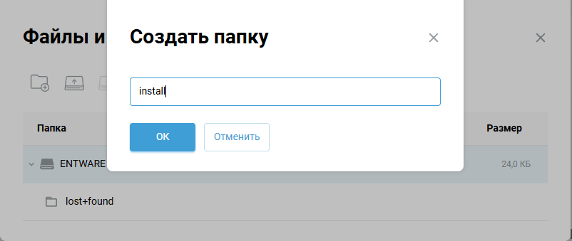
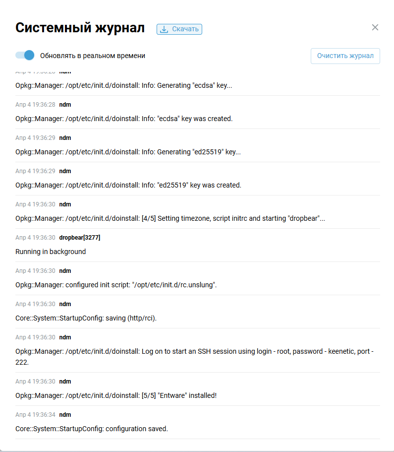
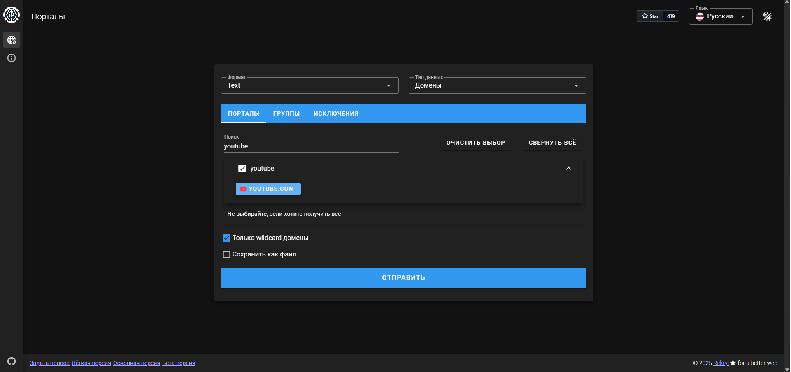
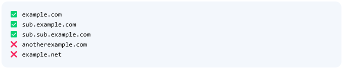
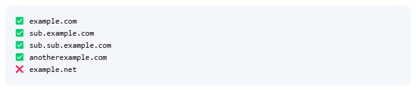
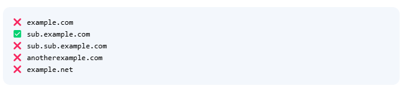

MagiTrickle -- https://github.com/MagiTrickle/MagiTrickle
SingBox - https://sing-box.sagernet.org/
Протестировано на Keenetic Giga KN-1011/KN-1012, Keenetic Viva KN-1913, Netis N6, Xiaomi MiRouter 3Gv1 (прошивка Keenetic).
Можно сделать во вкладке «Сетевые правила» > «Интернет фильтры» > «Настройка DNS»

Настройка DNS в интерфейсе роутера
Или командами в CLI:
dns-proxy tls upstream 1.1.1.1 sni cloudflare-dns.com dns-proxy tls upstream 1.0.0.1 sni cloudflare-dns.com dns-proxy tls upstream 8.8.4.4 sni dns.google dns-proxy tls upstream 8.8.8.8 sni dns.google dns-proxy https upstream https://9.9.9.9/dns-query


Началась установка.

Переходим во вкладку Диагностика, открываем журнал.
Смотрим за ходом установки, в конце установки появится запись:
«Opkg::Manager: /opt/etc/init.d/doinstall: [5/5] "Entware" installed!»

Вводим адрес своего роутера, порт 222, подключаемся.
Логин -- root, пароль -- keenetic. Сменить пароль сразу можете командой passwd.
Сделать это можно из вебморды кинетика (Приложения), или с помощью дополнительного ПО или из консоли. Я использую WinSCP.

Кладу в папку '/opt/tmp/'

cd /opt/tmp opkg install "название пакета"
Пишем:
/opt/etc/init.d/S99magitrickle start
(переходим по пути /opt/etc/init.d и запускаем там файл S99magitrickle)

MT запущен.
Зайти можно в браузере: адрес роутера:8080

Если нет, идем на пункт 12.
(бесплатные конфиги можете найти тут: https://github.com/Epodonios/v2ray-configs)
Ставим Sing-Box командой opkg install sing-box-go

Качаем файл tun.sh отсюда https://github.com/Kiarant/kiarant.github.io.
Заходим на https://kiarant.github.io/, вписываем адрес роутера и указываем ссылки vless и ss.
Конвертируем, сохраняем.

Закидываем конфиг по пути /opt/etc/sing-box/ (заменяем стандартный)

Если оставляете стандартный конфиг (в папке более одного файла):
Заходим по пути /opt/etc/init.d, редактируем файл S99sing-box.
Меняем строку с:
ARGS=\"run -D /opt/var/lib/sing-box -C /opt/etc/sing-box/\"
На:
ARGS=\"run -D /opt/var/lib/sing-box -c /opt/etc/sing-box/ИМЯ_ВАШЕГО_КОНФИГА.json\"


Открываем правой кнопкой свойства файла, в поле Oct прописываем значение 0755.
Галочки должны проставиться как на скриншоте.

Или в консоли прописываем команду:
chmod +x /opt/etc/ndm/netfilter.d/tun.sh
или
chmod 0755 /opt/etc/ndm/netfilter.d/tun.sh
т.е. делаем его исполняемым.

Проверяем конфиг sing-box командой:
sing-box -c /opt/etc/sing-box/config.json check

Запускаем:
sing-box -c /opt/etc/sing-box/config.json run

Зайти можно в браузере: адрес роутера:9090

При возникновении такого окна вводим: http://адрес роутера:9090 и нажимаем add.

Выбираем появившеюся внизу запись, открывается веб интерфейс sing-box.

Во вкладке Proxies можем увидеть подключения из конфига и выбрать то, которое будет использоваться для работы интерфейса tun0.
Перезагружаем роутер, заходим еще раз по адресу sing-box дабы убедиться, что он работает.
Проверьте, применились ли разрешающие правила для tun0:
iptables-save | grep tun+
Если в компонентах не установлен Wireguard VPN, устанавливаем.
Конфиг добавляем в «Другие подключения», ставим галочку «Использовать для выхода в интернет».
Выполняем действия по инструкции с шага 20 по шаг 36 https://docs.amnezia.org/ru/documentation/instructions/keenetic-os-awg/.
Запоминаем имя интерфейса с шага 22.
Нажимаем на + справа, создаем группу.
В выпадающем списке выбираем нужный нам интерфейс.
WARP -- nwg0 (номер из имени интерфейса который запоминали ранее).
Sing-Box -- tun0.

(у меня два подключения WG, поэтому два интерфейса nwg)
Нажимаем на + в правиле, разворачиваем список на стрелочки справа.

Для проверки указываем в Pattern, например, 2ip.ru, нажимаем на кнопку сохранить вверху.

Заходим на 2ip.ru, проверяем

Можем изменить интерфейс на tun0, перезагрузить страницу через Ctrl+F5/зайти через режим инкогнито.


Указываем в Pattern vkvideo.ru и теперь мы можем смотреть его с других стран.

Можете создавать разные группы с разными интерфейсами. Дальше ваша фантазия.
Описание типов правил: